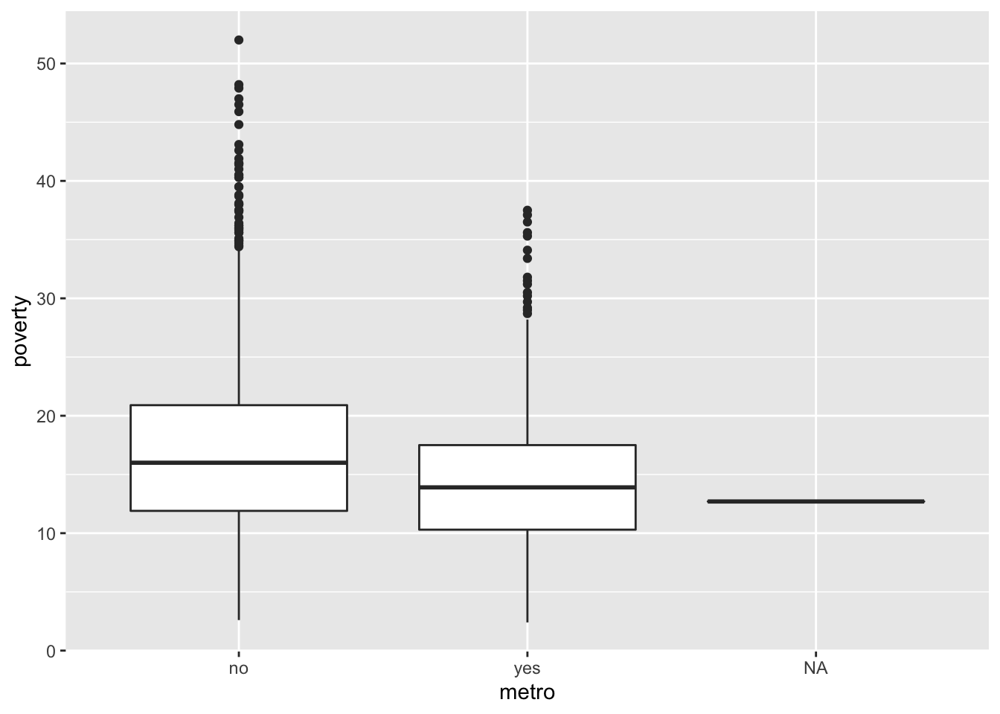

LAB ACTIVITY: R Workshop Day 1
Categorial Variables, Scatterplots, Correlation
There is a data frame called penguins inside a package called palmerpenguins. In the console, you can use the view() function to open this data frame in a new tab.
Please insert code chunks below each question.
Use the names() function to list all the variables in this data.
PART 1. CATEGORICAL VARIABLES
In your view(penguins) tab, see that there are two categorical variables: species and island.
SPECIES
Use the tally() function to count how many penguins of each species are in this data.
Let’s make visualizations of the above table.
Use gf_counts() to make a bar plot of the different species. Use color and fill commands to make it more visually appealing!
Use the mosaic() function to make a mosaic plot of the species variable.
ISLAND
Use the tally() function to find out the penguin count on each island for this data set. BE CAREFUL! Do not click “islands” suggestion! That is the name of different data set that RStudio is recognizing!
Let’s make visualizations of the above table.
Use gf_props() to make a bar plot of the island variable. Use color and fill commands to make it more visually appealing!
Use the mosaic() function to make a mosaic plot of the island variable.
SPECIES ON EACH ISLAND
Use the tally() function to count the number of each different species on each of the different islands. (This is a 2-by-2 contingency table!)
Intepret the values in the above table. Which species/island combination is most represented in this data? What do the zeros mean?
Let’s make visualizations of the above table.
Use gf_percents() to make a bar plot of the different species and fill = to color each bar according the island variable. This allow us to see for each species, how many came from each island.
Use the mosaic() function to make one mosaic plot of the species and island variables together.
For an extra challenge, let’s try adding color.
Use the highlighting argument to specify a variable to highlight with variable name in quotes.
For example, highlighting = “species”.
Use the highlighting_fill argument to specify your colors. In this case, three colors are needed.
For example, highlighting_fill = c(“color1”, “color2”, “color3”) Insert your color names inside quotes!
PART 2. TWO NUMERICAL VARIABLES - SCATTERPLOTS AND CORRELATION.
It seems plausible that, regardless of species, penguins with larger body mass could also have longer flippers and a longer bill. Let’s make scatterplots for each of these variables to examine their relationship with body mass. And from the graphs, we will consider which of these two variables seems to be more highly correlated with body mass.
First, make a scatterplot with bill length on the y-axis, body mass on the x-axis. (Make sure you get the correct variable names! Use the names() function or go look at the data frame! And remember y-axis variable goes first inside the function as y ~ x). Be sure to include the straight trend line to your plot with *geom_lm().
Next, make a scatterplot with flipper length on the y-axis, body mass on the x-axis. Be sure to include the straight trend line to your plot with *geom_lm().
From these two scatterplots, do you see a linear relationship? You should! Does bill length or flipper length appear to be more highly correlated with body mass or do they look about the same? In other words, do the points appear more closely clustered around the straight line in one of the scatterplots?
Let’s confirm what we see by finding the correlation statistic. There is missing data so include the argument use = “complete”
Compute the Correlation statistic for bill length and body mass.
Compute the Correlation statistic for flipper length and body mass.
Pipe %>% from the penguins data into the select function to select all 4 numerical variables. Store these into a variable called pen_vars and then apply the cor() function to this variable.
pen_vars <-penguins %>% select(.,.,.,.)
Save the correlations in a variable called pen_cor.
Then apply corrplot() to this variable.
With corrplot, try using the argument method = “number”.
Check help menu with ?corrplot to see other options for this method.
PART 3. FUN CHALLENGE!
MULTIVARIABLE SCATTERPLOT
Choose one of the scatterplots above and try to map as many variables as you can to the plot. Can you get 6 of the 8 variables onto the plot?
PART 4. OPTIONAL If you finish early! - Practice Day 1 Topics!
ONE NUMERICAL VARIABLE, ONE CATEGORICAL VARIABLE
Earlier, we made comparative side-by-side boxplots using the county data. We did this by taking the numerical variable of poverty rates (called poverty) separating the poverty rates into two groups based on the “yes or no” levels of the categorical variable metro. Recall that metro was “yes” if county has a large urban metro area) or “no” (county does not have a large urban metro area.)
The code we used for this is given below:
gf_boxplot(poverty ~ metro, data = county)
Use this same idea to make comparative side-by-side boxplots of the numerical variable called body_mass_g which gives the weight of the penguins in grams.
Which penguin species has the largest median weight? Did any species have outliers? Which species has the smallest IQR (DO you remember how to see IQR in a boxplot?) Do any species data show skew? Symmetric?
Use the same technique above with favstats() to find all the major summary statistics of body_mass_g for all three species using just one line of code! Be careful of the order of the variables! What happens if you reverse them? (Notice in the output that there is missing data.)
Use the same technique above to compute IQR for each species. Again, be careful of the order of the variables!You need to use an argument to remove missing data.
Which species has the least variability in the middle 50%? Does this agree with what you saw in the side-by-side boxplots?
Make a histogram of body mass faceted by species and also colored by species.
PART 5. OPTIONAL HOMEWORK!
1) Finish the activity above if you have not done so already.
AND/OR
2) Repeat some of the same analyses on a different data frame as decribed below.
In the mdsr package, there is a data frame called HELPrct. The HELP study was a clinical trial for adult inpatients recruited from a detoxification unit. In the console, type ?HELPrct to learn more.
Use categorical variables substance, homeless, sex and numerical variables cesd (measure of depressive symptoms, higher scores indicate more symptoms) and mcs (mental component score, higher scores indicate better functioning). Experiment with tally, bar plots, mosaic plots, scatterplots of cesd and mcs, correlation, etc.